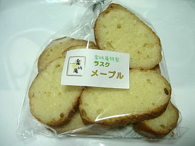
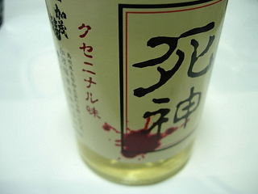
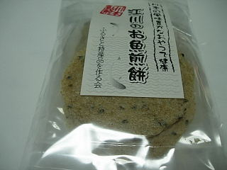

道の駅川本のお土産その2
2009/8/23
楽時庵（浜田市紺屋町60）のラスク（メープル）です。200円でした。

小さめのラスクですね。ちょっと固めでカリカリとしてました。片面に砂糖とメープルが多く塗ってあったので、甘くて美味しかったです。
砂糖菓子っぽいおやつでした。
島根県邑智郡川本町因原505-5
2009/8/23
楽時庵（浜田市紺屋町60）のラスク（メープル）です。200円でした。

小さめのラスクですね。ちょっと固めでカリカリとしてました。片面に砂糖とメープルが多く塗ってあったので、甘くて美味しかったです。
砂糖菓子っぽいおやつでした。
2009/8/23
加茂福酒造（邑南町）の「死神」315円

死神って名前が強烈ですね。クセニナル味ってどんなの？っと思い買ってみました。
カップで販売してるとお値段が少しお手ごろになるので買いやすくていいですね。
日本酒はほとんど飲まないので味はよくわからないですが、味が濃いわりには喉ごしがよく、後味すっきりで飲みやすかったです。
死神って名前だと体に悪そうなので、自分用にはもう買わないかも。でも今度見かけたらお土産用に買おうかなって思いました。

ふるさと特産品を作る会（川本町）の「江川のお魚煎餅」230円
原材料名の一番最初に「ぎぎ」って書いてあるので、ぎぎって魚がはいっているかもしれません。
ごまと、いりこ風味のお煎餅で、ちょっとピリっとする味でした。
お酒のおつまみにピッタリでした。